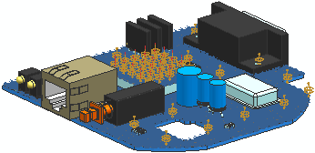

You can model convection implicitly using boundary conditions provided that you define a Convection to Environment constraint on:
Faces of 3D solids
2D elements
1D elements with cross area defined
0D elements with diameter defined
You can use different types according to the phenomena modeled.
Use this option when you know either the Convection Coefficient or Parameter and Exponent and the fluid temperature.
Use this option when you want to use a specific free convection correlation (example: hot air rising).
Use this option when you want to use a specific forced convection correlation (example: fans).
Both in transient and steady state solves, the solver calculates a single convection coefficient value for the entire convecting surface based on the characteristic information you specify.
Convection can also be explicitly model using a coupled NX Thermal and Flow solution by simulating the fluid volume and the embedded volumes and surfaces in a model.
